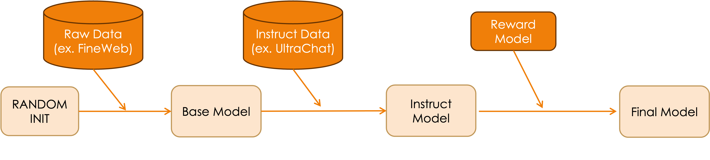

LLM Background 지식¶
LLM의 훈련 과정¶
LLM을 만들 때는 크게 세 가지 주요 단계를 거칩니다:

(참고) 이 그림은 아주 간단하게 도식화한 예시라서, 구체적인 사례에서는 많이 다를 수 있습니다. 자세한 내용은 뒤에서 보겠습니다.
1. 사전 학습(Pre-Training)¶
사전 학습은 LLM이 기본적인 언어 이해와 생성 능력을 습득하는 단계입니다.
- 데이터 수집: 인터넷 텍스트(웹 페이지, 위키, 책 등)에서 대규모 데이터를 수집합니다.
- 토큰화(Tokenization): 텍스트를 토큰이라는 작은 단위로 분할합니다. 모델마다 고유한 토크나이저를 사용하며, GPT-4의 경우 약 10만 개의 토큰 사전을 가지고 있습니다.
- 학습 방식: "Next Token Prediction"이라는 방식으로 학습합니다. 주어진 텍스트 시퀀스에서 다음에 올 토큰을 예측하는 것이 목표입니다.
- 아키텍처: 현대 LLM은 대부분 트랜스포머(Transformer)의 디코더(Decoder) 부분만 사용하는 "decoder-only" 구조를 채택합니다.
- 결과물: 인터넷 텍스트의 패턴을 확률적으로 모방할 수 있는 베이스(Base) 모델이 생성됩니다.
- 특징: 베이스 모델은 대화형으로 사용하기에는 적합하지 않으며, 단순히 텍스트를 통계적으로 이어쓰는 능력만 갖춘 상태입니다.
2. 지도 미세 조정(Supervised Fine-Tuning, SFT)¶
SFT는 베이스 모델이 대화형 어시스턴트처럼 작동하도록 추가 학습시키는 단계입니다.
- 데이터: 사용자-어시스턴트 형태의 고품질 대화 데이터를 사용합니다. 초기에는 사람이 직접 작성했으나, 최근에는 AI가 생성하고 사람이 편집하거나 완전히 AI가 생성한 합성 데이터를 사용하기도 합니다.
- 목적: 모델이 질문에 대해 도움이 되고, 사실에 기반하며, 해롭지 않은 대답을 하도록 가르칩니다.
- 과정: 베이스 모델에 비해 훨씬 적은 양의 데이터로 학습하지만, 실제 성능 향상에 중요한 단계입니다.
- Hallucination 해결: 모델이 모르는 것에 대해 "모른다"고 대답하거나, 검색과 같은 도구를 사용하도록 학습시킵니다.
- 결과물: 실제로 질문에 대화형으로 답할 수 있는 Instruct 모델이 생성됩니다.
3. 강화 학습(Reinforcement Learning, RL)¶
강화 학습은 모델의 응답 품질을 더욱 개선하는 단계입니다.
- 기본 원리: 모델이 다양한 방식으로 문제를 풀어보고, 좋은 결과에 보상을 주어 스스로 개선하도록 합니다.
- 방법론:
- 정답이 명확한 경우(예: 수학, 코딩): 정답을 기준으로 모델의 성능을 평가하고 보상을 줍니다.
- 정답이 주관적인 경우(예: 유머, 시): RLHF(Reinforcement Learning from Human Feedback)를 사용합니다. 사람의 평가를 모방하는 보상 모델(Reward Model)을 훈련시키고, 이를 기준으로 RL을 수행합니다.
- 장점: RL을 통해 모델은 인간이 생각하지 못한 풀이 방법이나 접근법을 발견할 수 있습니다. DeepSeek-R1이나 알파고와 같은 사례에서 이러한 현상이 관찰되었습니다.
- 특징: 강화 학습을 거친 모델들은 종종 "생각 시간"을 더 길게 가지며, 단계적인 추론 과정을 거쳐 더 정확한 답변을 제공합니다.
- RLHF의 한계: 보상 모델이 완벽하지 않기 때문에, 과도한 RL 학습은 오히려 모델 성능을 저하시킬 수 있습니다.
최신 LLM 모델의 특징¶
현대 LLM은 위 세 단계를 거쳐 개발되며, 다음과 같은 특징을 가집니다:
- 대규모 학습 데이터: 최신 모델들(예: Llama 3.1)은 15조 이상의 토큰으로 학습됩니다.
- 도구 사용 능력: 웹 검색, 코드 실행, API 호출 등 외부 도구를 활용할 수 있습니다.
- 멀티모달 능력: 텍스트뿐만 아니라 이미지, 음성 등 다양한 형태의 입력을 처리할 수 있습니다.
- 추론 능력: 단계적 사고 과정을 통해 복잡한 문제를 해결할 수 있습니다.
더 알아보기¶
혹시 LLM 에 대한 배경지식이 부족하시거나 보다 자세한 내용이 궁금하시면, 아래 LLM 문서를 참조하세요. 작금의 LLM 에 대한 개괄적인 내용을 정리한 문서입니다.
필자가 작성한 LLM Deep Dive 시리즈 페이지 입니다.